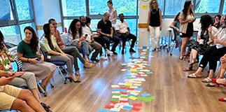

סיום שנה במרכז מנדל למנהיגות בצפון
2023-08-31
חזרה לחדשות מרכז מנדל למנהיגות בצפון
2023-08-31
2023-08-01
2023-06-11
2023-05-03
2023-04-19
2023-01-16
2023-01-16
2023-01-09
2022-12-29
2022-11-20
2022-11-17
2022-11-14
2022-06-28
2022-03-30
2022-01-17
2022-01-17
2021-12-21
2021-12-14
2021-12-10
2021-11-15
2021-11-14
2021-11-02
2021-10-17
2021-01-10
2021-01-10
2021-01-10
2020-12-30
2020-11-08
2020-08-10
2020-03-31
2019-12-10
2019-12-02
2019-10-20
2019-10-17
2019-09-26
2019-09-23
2019-04-04

2019-04-04
2019-03-11
2019-02-13
2019-01-22
2018-12-24
2018-12-19
2018-11-21

2017-05-15
2018-10-04
2018-09-03
2018-03-20
2018-02-20
2017-11-21
2017-10-17
2017-10-17
2017-02-02
2016-10-27
2016-10-10
2016-07-10
2016-07-01
2016-05-30
2016-05-25
2016-05-10
2016-05-09
2016-05-09

2016-05-03
2016-04-11
2016-03-23
2016-03-23
2016-02-17
2016-02-10
2016-01-11
2015-12-28
2015-12-24
2015-12-24
2015-12-03
2015-11-26
2015-11-24
2015-11-19
2015-11-19
2015-10-29

2015-10-13
2015-09-16
2015-07-20
2015-06-09
2015-06-01
2015-05-11
2015-03-11
2015-02-24
2015-02-09
2015-02-03
2014-12-28
2014-12-25
2014-12-23
2014-11-20
2014-10-22
2014-10-22

2014-10-01
2014-09-16
2014-09-16
2014-09-16
2014-07-06
2014-06-17
2014-06-08
2014-05-14
2014-05-08
2014-03-31
2014-03-31
2014-03-31
2014-03-30
2014-03-27